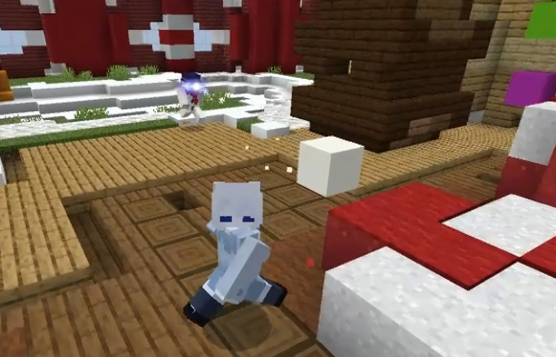
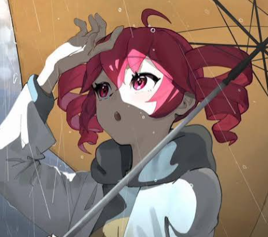
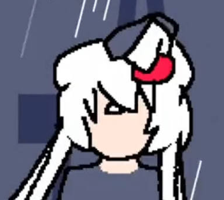
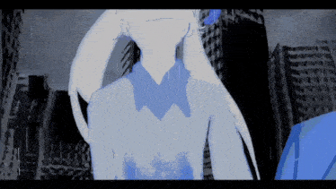

Due to me being chronically online, Ive picked up many interest with media. I'd recommend checking these out if you are interested!

Being one of my most played games, Minecraft is a 3d sandbox game create by notch in 2011. I started playing in 2019 and I've loved it ever since. While survival is fun, I mostly enjoy building, making maps with command blocks, and online pvp. My channel started as a minecraft channel.
Content smp is a minecraft server created by Doctor4t with a complex yet very well made story. It shows how the desire of power can distort and warp society.
Undertale and Deltarune are indie rpg games created by toby fox where nobody has to die! Undertale is about a human child who get trapped underground in a kingdom full of monsters who you can either befriend or kill. Deltarune is about a human, a monster, and a prince of the shadows who must work together to prevent a world ending event.
Stardew valley is a farming simulator created by ConcernedApe. You are a young adult who choose to begin life on your late grandfather's farm. You can farm, mine, interact with the people in town, and meet new strange creatures
Splatoon is a muiltiplayer game where your goal is to paint more of the map more than your enemy.
Phasmophobia is a psychological horror game made by kinetic games. You go into several haunted locations to find and investagate the ghost. However the ghost wont like this and will make sure you wont make it out.

i like rain :D
JSAB is a bullet hell game where you dodge everything that get thrown your way with amazing music. The game has a storymode as well as plenty of extra tracks to play on
Doors is a roblox horror game where you going through what seems like endless doors while being hunted down by entity's
ARG are media that are like a puzzle, they often are horror based where you need to decrypt and find new information online. My favorite arg is the IHasAFaceLulz Arg where a teenager get contantly stalked by a computer entity jx1dx1
Forsaken is a 1v8 horror game where as a survivor you must survive until the clock runs out, if you are a killer you must kill everyone within the time limit. My survivor main is twotime and guest 1337 and my killer main is slasher and john doe.
Backrooms is a internet creepypasta where when you noclip you will be trapped in the backrooms. there are muitiple levels or layers to the backrooms each with their own threat or advantage

ACNH is a cozy game where you travel to a deserted island. you can decorate, fish, catch bugs, and dive for sea creatures.
Vocaloid is a set of programs that let you make artifical singing, my most favorite music is vocaloid and I think it deserves its own section.
Kasane Teto is a utau/synthv voicebank made in 2008. She originally started as a april fools joke before becoming a utau voicebank. Since then she has took the world by storm being on of the most popular voicebanks. Teto is often potrayed as a bread obsessed, tsundre character.
| Song name and creator | Image | Why I like it |
|---|---|---|
| Window view by Farewell225 featuring synthv Teto | Window View is a song set in a train, the song is about struggling to move on, and missing the past. which I relate with in a lot of ways. | |
| Rainy Romance by noonedoesstuff featuring synthv Teto |  art by @ndhumo |
Rainy Romance is a song about the heartache after a breakup. Teto expresses how she struggles getting out of bed and moving on. relating love to rainy weather. Almost everyone has felt like this at one point in their life. |
| Machine love by Jamie Paige featuring Utua and Synthv Teto |  Art by SvoSS Art by SvoSS |
Machine love is about teto wishing to feel real love. Feeling as she isn't real. It is a tribute to one of the first teto songs "song of robot's ear" by Th3silenton3 featuring utua teto (which is peak). This is one of the best teto songs out there and is extremely well made |
Hatsune Miku is a offical voicebank for the vocaloid program. She is by far the most popular voicebank there is. Miku was created in 2007 and she is protrayed as a cheerful, leek obsessed character
| Song name and creator | Image | Why I like it |
|---|---|---|
| Looping the rooms by Rusino |  |
Looping the rooms is a song about being trapped in the backrooms which could represent life. No matter what you do it feels like the same thing happens just like walking throught backrooms. i also just really like the backrooms |
| Retry Now by NAKISO | Retry now is a extremely dark song about miku who can't accept your regection. so like a video game she kills you, resets, and try's again. I like how the dark song contrast with the cartoonish and bright video | |
| Static by Flavor Foley | Static is about miku trying to get your attention and to avoid falling in nostalgia. Remember to dont touch that dial! |

Eleanor forte was the first english voicebank for synthv. She was originally dicountinued (now brought back). Eleanor is often potrayed as timid and old fasioned character. Eleanor forte is my favorite voicebank and what got me into vocaloid in the first place
| Song name and creator | Image | Why I like it |
|---|---|---|
| Aftermath by Evvytunes | This song is about trying to stay in a relationship that isnt working out. Ive related to this at one point. A very underated song. | |
| The Finale of eng-f1 by gloopbloop |  |
This song was created when eleanor was discountinued. She sings about being forgotten. luckily she is getting a new voicebank soon :D |

weathergirl
is a song by flavor foley featuring eleanor forte. It is about having love for someone else that doesnt feel the same. This is my favorite song of all time. Inspiring my identity and how I present myself. (the theme, the colors, the font are all inspired by weathergirl)